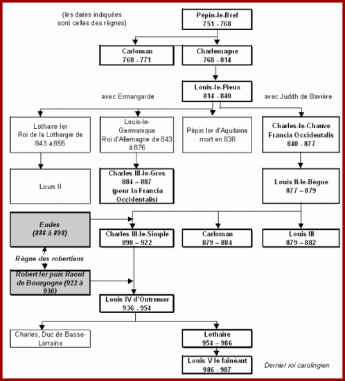
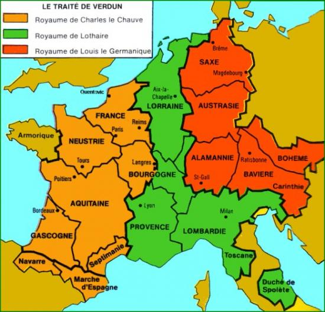
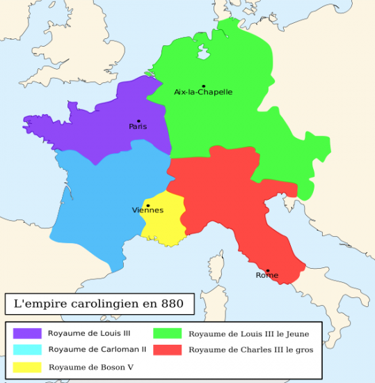
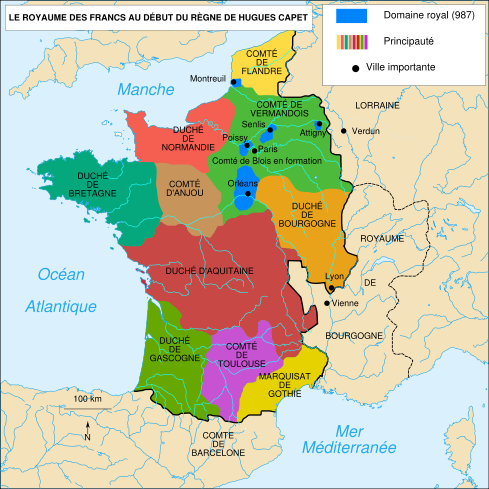

MACLASSE.COM

La dynastie des Mérovingiens prend fin quand Pépin le Bref, fils de Charles Martel, maire du palais (et non fils de roi) devient roi des Francs. Il fonde alors une nouvelle dynastie. Celle-ci s'appellera pourtant la dynastie carolingienne, dont le nom provient du fils de Pépin le Bref, Charlemagne (Carolus magnus) en raison de l'importance de son règne dans l'Histoire de France. Tous leurs descendants sont donc des rois carolingiens.
En 814, Louis-le-Pieu succède à Charlemagne en prenant le titre d'Empereur mais ses trois fils vont l'écarter du pouvoir et se partager l'Empire en trois lors du partage de Verdun en 843.
(Récit d’un témoin de la scène). Au milieu du mois de juin 843, un jeudi, Lothaire, Louis et Charles, petits-fils de Charlemagne, se réunirent, accompagnés chacun d'un nombre égal de nobles ; ils se jurèrent mutuellement de diviser aussi également que possible l'Empire et de conserver la paix entre eux à partir de ce jour.
D'après Nithard, IXe siècle.
Ce partage marque le début du déclin des rois carolingiens. Les querelles internes et la quête de pouvoir vont affaiblir les successeurs de Charlemagne. Son Empire sera rarement réunifié pendant le règne des rois carolingiens.
Les rois suivants vont aussi être confrontés aux invasions normandes à partir de 840. Incapables de défendre les territoires du royaume contre les raids vikkings, les rois carolingiens vont être de plus en plus contestés et vont perdre de leur pouvoir au profit des grands seigneurs. Ces derniers vont assurer seul leur protection et celle de la population et ils vont devenir indépendants et très puissants.
Le dernier roi carolingien, Louis V, surnommé le fainéant en raison de la brièveté de son règne (986-987) va mourir jeune et sans héritier. Une assemblée se réunit à Senlis en juin 987 pour élir le prochain roi. Les seigneurs écartent Charles, l'oncle de Louis V pour nommer Hugues Capet, Comte de Paris, petit seigneur en comparaison d'autres beaucoup plus puissants. Il est sacré à Noyon en 987, ce qui marque la fin de la dynastie des Carolingiens au profit de la dynastie des Capétiens.
As-tu compris et retenu cette leçon? Es tu capable de répondre à quelques questions?
- Quel est le premier roi carolingien ?
- Qui donne son nom à la dynastie carolingienne ?
- Comment s'appelle le traité concernant le premier partage de l'Empire de Charlemagne, en quelle année est-il prononcé ?
- Quelle roi récupère la Francie occidentale (le royaume le plus à l'ouest) ?
- Quel roi met fin à la dynastie carolingienne ?
La dynastie carolingienne fondée par pépin-le-Bref porte le nom de son fils Charlemagne. L'empire de ce dernier est divisé après sa mort et les rois carolingiens sont souvent en conflit les uns contre les autres. Ils ne pourront défendre leurs territoires contre les invasions Vikkings et vont perdre leur autorité au profit des grands seigneurs qui vont devenir indépendants. Le sacre d'Hugues Capet en 987 met fin à la dynastie des Carolingiens.


Mentions légales / Qui sommes-nous ? / Plan du site
Nos matières : français - mathématiques - histoire - sciences - arts visuels - geographie